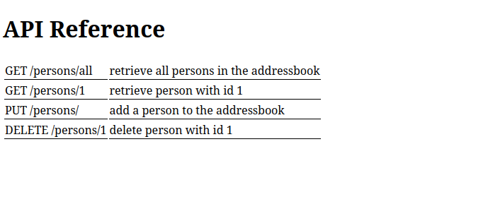
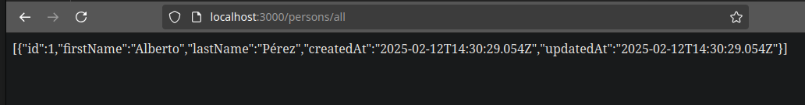

Práctica 6.1 - Dockerización del despliegue de una aplicación con Node.js
Despliegue con Docker
Para realizar esta práctica de despliegue con Docker será necesario tener disponible una aplicación que desplegar en primer lugar. Para ello, clonaré un repositorio de GitHub ejecutando:
git clone https://github.com/raul-profesor/DAW_practica_6.1_2024.git
Este repositorio ya contiene un documento Dockerfile, pero es necesario modificar su contenido para poder realizar el despliegue correctamente.
En este caso, el contenido de este archivo será:
FROM node:18.16.0-alpine3.17
RUN mkdir -p /opt/app
WORKDIR /opt/app
COPY src/package.json src/package-lock.json .
RUN npm install
COPY src/ .
EXPOSE 3000
CMD [ "npm", "start"]
| Comando | Explicación |
|---|---|
| FROM node:18.16.0-alpine3.17 | Indica que las imágenes base de esta aplicación serán la imágenes oficiales de Node y Alpine Linux en Docker Hub |
| RUN mkdir -p /opt/app | Se crea el directorio /opt/app dentro de una nueva capa de la imagen base que estamos utilizando |
| WORKDIR /opt/app | Establece '/opt/app/ como el directorio de trabajo a utilizar. Todas las instrucciones se ejecutarán desde esta ruta a partir de ahora |
| COPY src/package.json src/package-lock.json . | Se copian estos archivos de la máquina local a la imagen de Docker |
| RUN npm install | Se ejecuta 'npm install' dentro de la imagen de Docker |
| COPY src/ . | Se copian el resto de contenidos de src/ (de la máquina local) a la imagen de Docker |
| EXPOSE 3000 | Indica que el contenedor, en tiempo de ejecución, debe 'escuchar' en el puerto 3000 |
| CMD [ "npm", "start"] | Indica que el contenedor, al ser arrancado, debe ejecutar 'npm start', lo que hará que arranque la ejecución de la aplicación |
Con nuestro archivo Dockerfile preparado, podemos 'construir' la imagen de Docker. Para ello sólo hay que ejecutar:
docker build -t librodirecciones .
Para ejecutar la aplicación 'dockerizada' y comprobar su buen funcionamiento, hay que ejecutar:
$ docker run -p 3000:3000 -d librodirecciones
Si accedemos al puerto 3000, tendremos acceso a una referencia de la API de la aplicación:

Docker Compose
Para gestionar el contenedor de la aplicación junto con otro que se encargue de dar servicio de persistencia de datos, el repositorio contiene un archivo 'docker-compose.yml'. A partir de este archivo, levantaremos la infraestructura completa de la aplicación (los dos contenedores que actualmente la componen). Para ello, hay que ejecutar:
docker compose run addressbook npm run migrate # Se crean las tablas de la BBDD
docker compose up --build -d # Se construyen los contenedores de la aplicación
Ahora, para comprobar el buen funcionamiento de la aplicación, voy a realizar una petición PUT para insertar datos dentro de la BBDD de la aplicación, ejecutando:
curl -X PUT http://localhost:3000/persons -H'Content-Type: application/json' -d '{"id": 1, "firstName": "Alberto", "lasName": "Pérez"}'
Si ahora, desde el navegador, accedo a la ruta que realiza la petición GET de todos los datos de la tabla, muestra:
